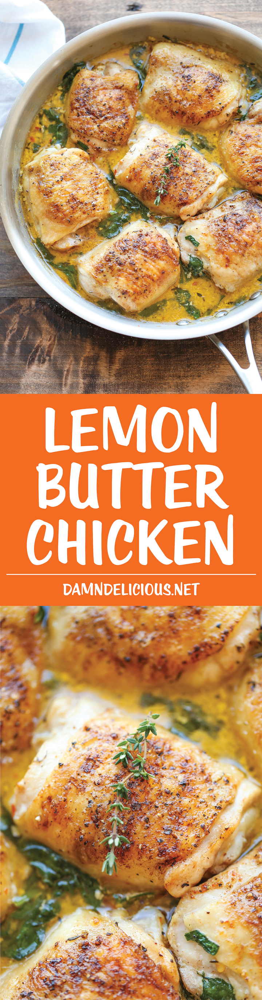

Lemon Butter Chicken

Easy crisp-tender chicken with the creamiest lemon butter sauce ever – you’ll want to forget the chicken and drink the sauce instead!
Happy New Year! I know I should really be sharing some sort of salad or quinoa recipe with the start of the year but you know me and my chicken thigh obsession. I just can’t get enough, especially when a lemon butter cream sauce is involved.
And if you’re in the need of some clean greens for the new year diet, well, this dish has plenty of baby spinach. Good enough, right?
Ingredients
- 8 bone-in, skin-on chicken thighs
- 1 tablespoon smoked paprika
- Kosher salt and freshly ground black pepper, to taste
- 3 tablespoons unsalted butter, divided
- 3 cloves garlic, minced
- 1 cup chicken broth
- 1/2 cup heavy cream
- 1/4 cup freshly grated Parmesan
- Juice of 1 lemon
- 1 teaspoon dried thyme
- 2 cups baby spinach, chopped
Instructions
- Preheat oven to 400 degrees F.
- Season chicken thighs with paprika, salt and pepper, to taste.
- Melt 2 tablespoons butter in a large oven-proof skillet over medium high heat. Add chicken, skin-side down, and sear both sides until golden brown, about 2-3 minutes per side; drain excess fat and set aside.
- Melt remaining tablespoon butter in the skillet. Add garlic, and cook, stirring frequently, until fragrant, about 1-2 minutes. Stir in chicken broth, heavy cream, Parmesan, lemon juice and thyme.
- Bring to a boil; reduce heat, stir in spinach, and simmer until the spinach has wilted and the sauce has slightly thickened, about 3-5 minutes. Return chicken to the skillet.
- Place into oven and roast until completely cooked through, reaching an internal temperature of 165 degrees F, about 25-30 minutes.
- Serve immediately.
Return to main page